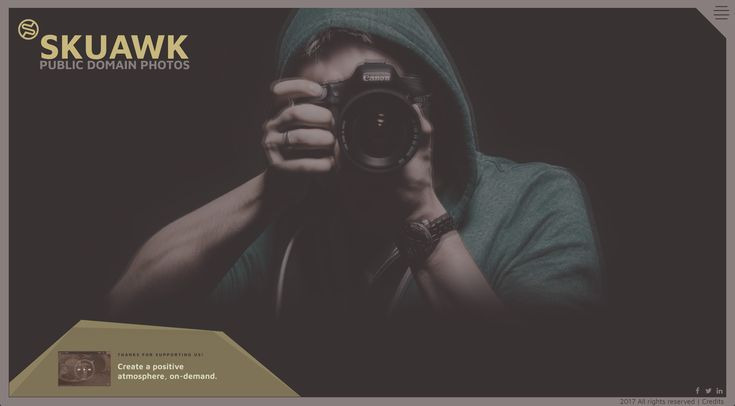

first project
website project
In this project, I worked on designing and developing a website for a fictional photography company called XYZ Photography. The company specializes in wedding and portrait photography and wanted a website that would showcase their work and services in an elegant and professional way.
second project
logo design project
In this project, I worked on designing and developing a logo for any company . The company specializes in wedding and portrait photography and wanted a logo that would showcase their work and services in an elegant and professional way.